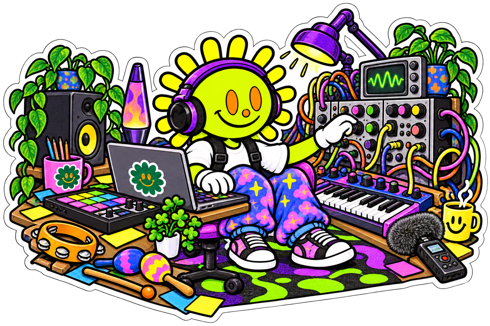
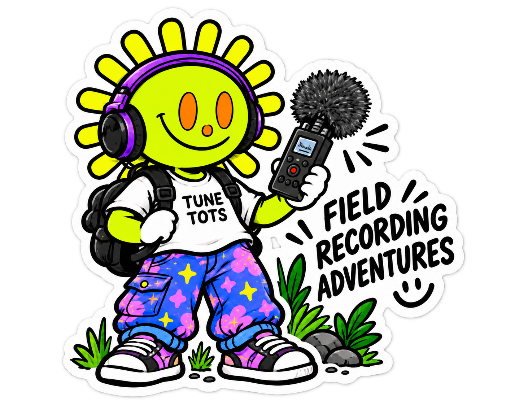

01 / RECORDЗаписывай то,
Записывай то,
что обычно проходит мимо.
Большая кнопка записи, живой таймер и сигнал с микрофона. До 60 секунд настоящего звука вокруг тебя.

Цифровые инструменты / звуковые эксперименты
Приложения, музыкальные инструменты и цифровые эксперименты, которые превращают окружающий мир в музыку.
Смотреть FIELD ↓
придумываем · крутим · слушаем
01 / FIELD · Полевые звуковые приключения
FIELD — полевой рекордер и звуковой дневник, который родился внутри нашей музыкальной лаборатории.
В первую очередь мы создаём FIELD для учеников Tune Tots Lab: чтобы прямо на уроке записывать полевые звуки, быстро обрабатывать их и использовать в музыке.
Записью можно поделиться с группой, друзьями и преподавателем — так работа над треком идёт быстрее. А теперь мы хотим открыть FIELD для всех, кому интересно слушать мир по-новому.

слышишь? записывай ↘
FIELD на телефоне
Это реальные экраны FIELD. Запиши звук, преобрази его эффектами, сохрани в библиотеку, выполни ежедневную миссию и отправь находку на карту мира.
Большая кнопка записи, живой таймер и сигнал с микрофона. До 60 секунд настоящего звука вокруг тебя.

Echo, Resonator, Chorus, Flanger, Glitch, Reverse и другие эффекты можно смешивать с оригинальной записью.
Ищи записи по названию, отмечай любимые и возвращайся к недавним звукам прямо на уроке.


Каждый день FIELD предлагает короткую миссию: записать похвалу, воду, транспорт или что-то неожиданное.
Публичная карта собирает звуковые открытки из разных городов. Точное местоположение не показывается — только город.
 Париж
Вена
Ереван
Бангкок
Токио
Париж
Вена
Ереван
Бангкок
Токио
Как FIELD помогает работать со звуком
Вместо двух повторяющихся наборов карточек — один понятный маршрут.
Поймай до 60 секунд живого звука.
Оставь главное и настрой высоту.
Добавь эффект и найди свой характер.
Собери библиотеку и поделись.
Визуализация строится из твоей записи. Никакой декоративной анимации: видно именно то, что услышал микрофон.
Обработка применяется к записи в реальном времени — от мягкого эха до разрушенного Glitch.
Все находки остаются на устройстве: их можно назвать, прослушать, отметить сердцем и использовать на следующем занятии.
Готовы слушать?
Остановись, нажми Record и запиши этот мир. FIELD работает в браузере и в Telegram.